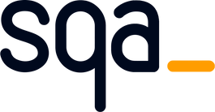
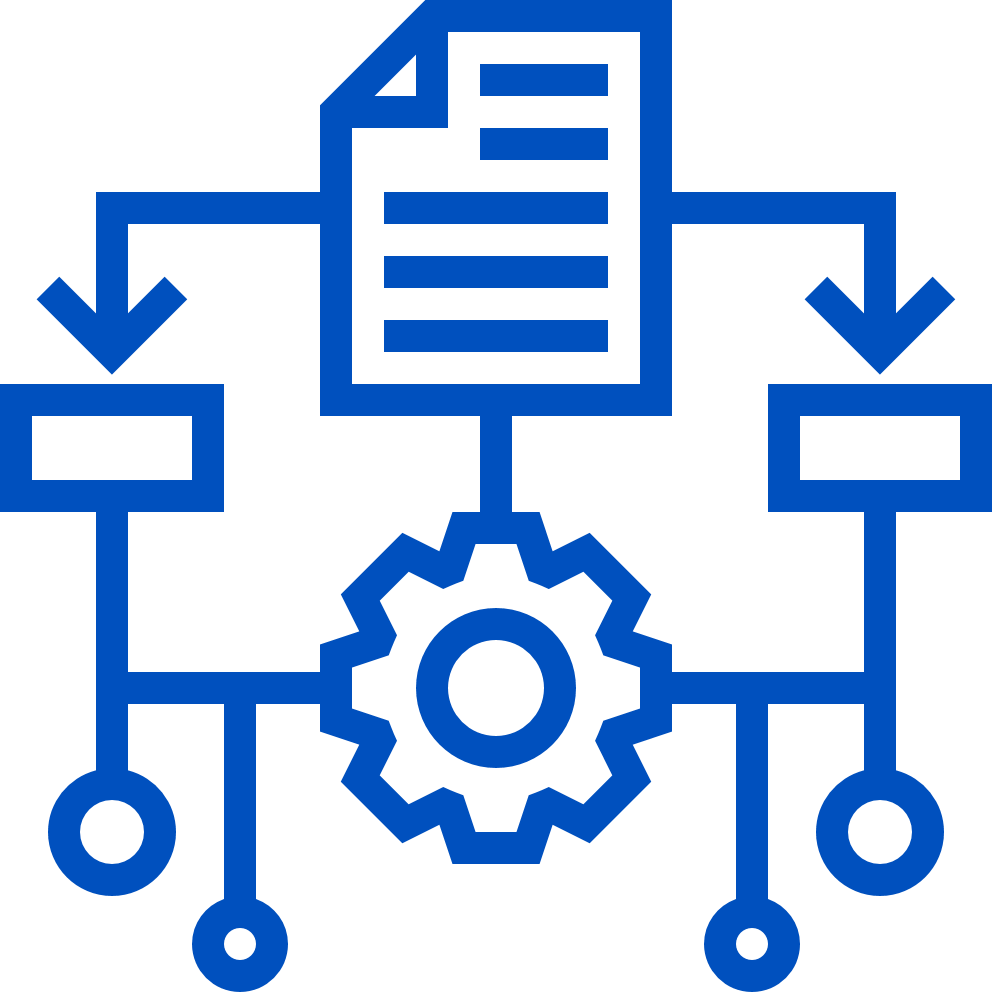

BIENVENIDO A

EVIDENCIAS
Tu aliado estratégico en Calidad de Software
Evidencias SQA es una solución de alto rendimiento diseñada para optimizar la recolección de pruebas durante los ciclos de Quality Assurance. Permite un flujo de trabajo ágil desde la captura inicial hasta la exportación por lotes.
Características Principales
 Pantalla Completa
Pantalla Completa
Desplazamiento automático y ensamblado inteligente para capturar sitios web sin cortes manuales.
 Área Visible
Área Visible
Obtén una imagen instantánea de lo que ves en tu pestaña actual con un solo clic.
 Copiado Inteligente
Copiado Inteligente
Permite copiar múltiples capturas al portapapeles respetando el orden de selección.
 Carga Rápida
Carga Rápida
Integra imágenes externas con Ctrl + V o arrastrando archivos directamente al visor.

Gestión de ResultadosPanel centralizado para visualizar, editar notas y organizar tus capturas.
Exportación Masiva
Descarga todas las evidencias de tu sesión de pruebas en un único archivo comprimido .ZIP.
💡 Consejo de QA: Todas las capturas se almacenan localmente. Recuerda descargar tus evidencias antes de finalizar la jornada para asegurar tu trabajo.
¡Listo para optimizar tus pruebas!